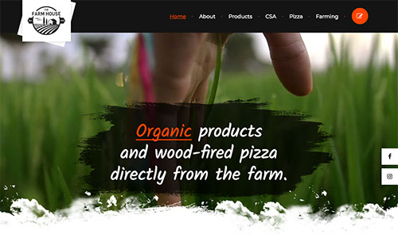

Field Stone Farm - Demo
As I stated before, I build websites as a hobby and sometimes that includes using a real actual business as a fake client. This website is still in the works for a local farm, Field Stone Farm, which does Community Supported Agriculture (CSA). Their current website is a bit outdated and while they use a blog format, it is also lagging blogs. So by re-imagining what the new site could be, don't even do a blog unless you're committed and you have time and keep it simple with a one-page layout using HTML coding rather than WordPress if needed, especially if you're just trying to get new consumer leads.
